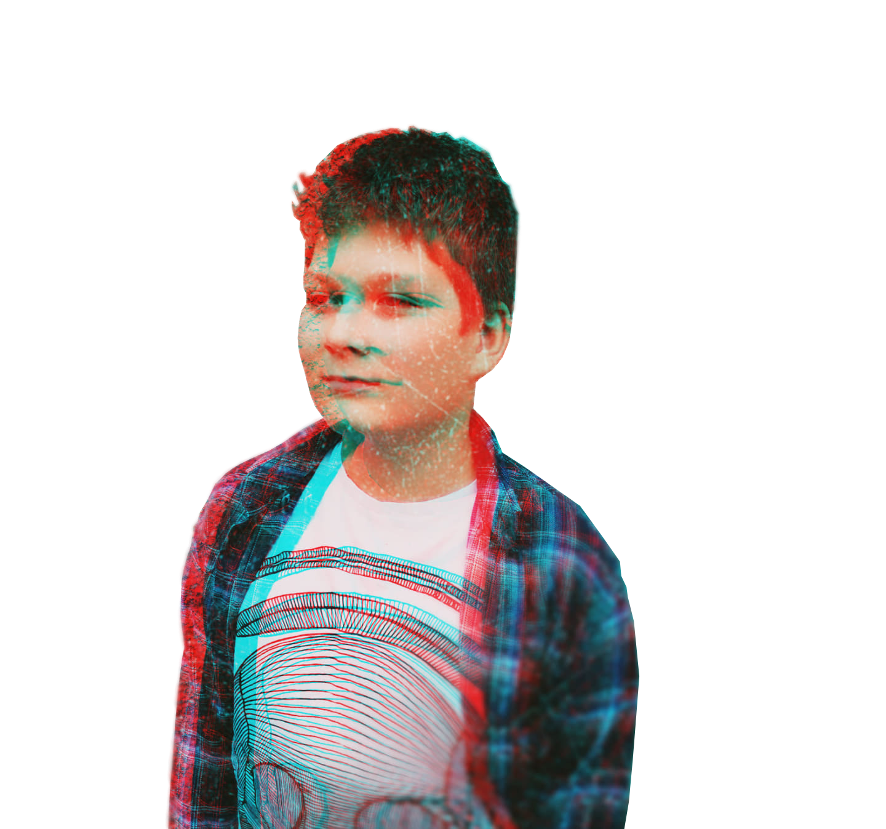

„Múdri hovoria, aby niečo povedali,
blázni rozprávajú, len aby vraveli.“

Ahoj volám sa Maroš.
Chodím na základnú školu.
Mám rád počitače, tak moc že som sa od tretej triedy začal učiť programovať.
Najskôr som robil v sratchi, potom keď som aspoň trošku vedel čo je to java.script tak som prešiel do p5.js.
Neskôr ma zaujali možnosti UNITY.
Teraz robím v Atome aby som si vedel urobiť web.
A aj by som zabudol na svojích stoviek hodin prehraných za počitači, napr.minecraft,day of deafet, terraria.
Ďalej a ďalej a ďalej, to už je ako esej.
Aby som nehovoril iba o počitači tak ti poviem o mojich športoch.
Tri roky chodím na karate, rád sa bicyklujem a codím do lesa.
Riadne ma bavia spoločenské hry.
Asi preto lebo im rozumiem a viem ich pochopiť, napr.Doba kamená, Descent, Fallout(áno už je aj spoločenská hra)